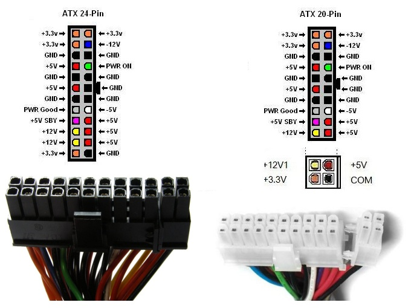
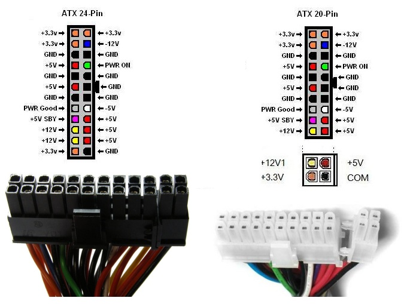

Zasilacz Komputerowy i UPS
Jest to urządzenie dostosowujące poziom napięcia i prądu z sieci energetycznej do wymagań zasilanego urządzenia.
Zasilacz przetwarza napięcie przemienne dostarczane z sieci energetycznej na niskie napięcia stałe, niezbędne do pracy pozostałych komponentów komputera. Zamianę napięcia przemiennego na napięcie jednego znaku, które po dalszym odfiltrowaniu może być zmienione na napięcie stałe nazywane jest procesem prostowania.
Prostowanie przeprowadzane jest poprzez diodę lub tzw. mostek prostowniczy Graetza (układ czterech diod prostowniczych), zaś wygładzanie następuje dzięki filtrom składającym się z cewki, opornika, dławika i kondensatorów elektrolitycznych.
W zależności od budowy możemy wyróżnić zasilacze:
1.Transformatorowe (liniowe)
2.Impulsowe
Podłączenie do płyty głównej
Do połączenia zasilacza z płytą główną komputera służy wtyczka ATX 24-pin określa często jako MPC (Main Power Connector)
albo P1. Starsze modele zasilaczy są wyposażone w złącze 20-pinowe.
Nowe zasilacze są wyposażone w złącze 24-pinowe. Niektóre zasilacze ATX posiadają dwie wtyczki: 20-pinową i 4-pinową, które można podłączyć jednocześnie do gniazda 24-pinowego.

Wyróżniamy następujące podstawowe wartości napięć w zasilaczu:
3.3 V (kolor pomarańczowy) – zasila m.in. chipsety, moduły pamięci operacyjnej RAM
5 V (kolor czerwony) – zasila większość podstawowych układów scalonych
12 V (kolor żółty) – zasila silniki napędów, regulatory napięcia
Masę GND oznaczono kolorem czarnym

Zasilanie procesora +12V
Poniżej druga wtyczka podłączana do płyty głównej (poza 24-pinową P1), dostarczająca napięcia zasilające dla procesora (+12V). Pojawiła się w zasilaczach z powodu rosnących wymagań prądowych nowych procesorów.
Czasem można spotkać się z wersją 6-pinową tej wtyczki.
Istnieje także rozszerzona wersja 4-pinowego złącza pomocniczego - jest to złącze ATX12V / EPS12V zawierające 8 pinów zasilania. Stosowane w płytach serwerowych i komputerach profesjonalnych, których procesory pobierają większą moc.
Złącze Molex
Złącze 4-pinowe o nazwie Molex to standardowy sposób podłączania zasilania do wielu różnorakich urządzeń wewnętrznych: dysków twardych i napędów optycznych typu ATA, kart graficznych i wielu innych urządzeń (np. interfejsów FireWire w postaci kart PCI).
Dostarcza napięć +5V i +12V. Złącze to w tej chwili jest coraz rzadziej wykorzystywane, wypierają je wtyki SATA i PCI-E.
Mini-Molex
Jeden z najmniejszych wtyków, zasila stacje dyskietek FDD. W niektórych przypadkach dostarcza też dodatkową moc do kart wideo AGP. Złącze to określa się najczęściej nazwą Mini-Molex albo Berg.Wtyczkę tą do dziś znajdziemy nawet w najnowszych zasilaczach, mimo iż stacje dyskietek powoli odchodzą do lamusa.Złącze dostarcza napięć +5V i +12V.
15-pinowe złącze SATA
Zasila dyski twarde i optyczne standardu Serial ATA. Dostarcza trzech napięć: +3,3V, +5V i +12V. Zwróć uwagę, iż złącze charakteryzuje się wcięciem w kształcie litery L zabezpieczającym przed nieprawidłowym montażem.
Zasilanie karty graficznej
Wtyczka zasilająca karty graficzne.Większość nowoczesnych zasilaczy jest wyposażone w 6-pinowe złącze przeznaczone dla kart graficznych PCI Express. Może ono dostarczyć do 75 watów mocy. W najnowszych konstrukcjach wprowadzono złącze 8-pinowe.Ze względu na kompatybilność wstecz stosuje się także złącza 6+2 piny.
Złącze AUX
AUX (ang. Auxilliary – pomocnicze) - 6-pinowe złącze opracowane w celu odciążenia prądowego głównego złącza zasilania ATX - płyta główna musiała posiadać kompatybilne gniazdo. To złącze wprowadzono, ponieważ wtyczka zasilająca typu Molex wytrzymuje obciążenie do 250 W, co może nie wystarczać w przypadku np. płyty głównej obsługującej kilka mikroprocesorów. Używana głównie w starszych płytach głównych, dostarcza napięcia 3.3 V i 5 V.
Starszy standard AT
Do podłączenia zasilacza w standardzie AT używało się dwóch identycznych złącz oznaczanych P8 i P9 (rzadziej P1 i P2). Nie istniało jednak fizyczne zabezpieczenie przed niepoprawnym podłączeniem, a mogło ono spowodować trwałe uszkodzenie płyty głównej. Podczas montażu należało pamiętać, że czarne przewody masy obu wtyczek powinny znajdować się obok siebie.
Diagnozowanie problemów z zasilaczem
Jeżeli próba włączenia komputera przyciskiem power nie przynosi efektów, zanim zaczniesz szukać problemu z zasilaczem sprawdź, czy: kabel zasilający jest podłączony do sieci, przełącznik 0/1 na zasilaczu jest włączony, kabel nie wysunął się z gniazda zasilacza oraz sprawdź czy przycisk power jest prawidłowo połączony z płytą główną. Symptomy nieprawidłowego działania zasilacza komputerowego:
1.Podczas włączenia komputera nie następuje inicjacja płyty głównej
2.Samoczynne restarty komputera (podobne objawy może dawać uszkodzony wentylator chłodzący procesor CPU lub GPU)
3.Zainicjowanie normalnego trybu pracy komputera udaje się dopiero po kilkakrotnym załączeniu i wyłączeniu komputera
4.Daje się wyczuć swąd spalonej izolacji z okolic zasilacza
5.Występuje brak zasilania napędów pamięci masowej (12 V)
6.Dotknięcie obudowy powoduje wyczuwalne porażenie prądem
7.Nie słychać odgłosu pracy wbudowanego w zasilacz wentylatora
Zasilacze awaryjne UPS
Rodzaj zasilacza komputerowego, umożliwiającego (dzięki zastosowaniu akumulatorów) pracę zestawu komputerowego podczas przerwy w dostawie prądu, stanowiącego rodzaj filtra sieciowego poprawiającego stabilność dostarczanego napięcia oraz pracującego jako bezpiecznik przepięciowy.
Odmiany zasilaczy UPS:
1.Line-Interactive – podczas normalnej pracy UPS przekazuje napięcie wejściowe na wyjście (ładując jednocześnie akumulatory przy użyciu prostownika), zaś w przypadku wykrycia awarii zasilania włączony zostaje falownik dostarczający energię z wewnętrznych akumulatorów.
2.Off-line – podczas normalnej pracy UPS przekazuje napięcie wejściowe na wyjście (ładując jednocześnie akumulatory przy użyciu prostownika), zaś w przypadku wykrycia awarii zasilania dostarcza energię z akumulatorów, jednocześnie odłączając się całkowicie od sieci energetycznej.
3.On-line – zasilacze UPS średniej mocy, w których napięcie sieciowe 230V zostaje zamienione na napięcie stałe, służące
do ładowania akumulatorów, zaś komputer jest zasilany z akumulatorów, jednocześnie będąc całkowicie odseparowanym od sieci energetycznej.

albo P1. Starsze modele zasilaczy są wyposażone w złącze 20-pinowe.
Nowe zasilacze są wyposażone w złącze 24-pinowe. Niektóre zasilacze ATX posiadają dwie wtyczki: 20-pinową i 4-pinową, które można podłączyć jednocześnie do gniazda 24-pinowego.
Wyróżniamy następujące podstawowe wartości napięć w zasilaczu:
3.3 V (kolor pomarańczowy) – zasila m.in. chipsety, moduły pamięci operacyjnej RAM
5 V (kolor czerwony) – zasila większość podstawowych układów scalonych
12 V (kolor żółty) – zasila silniki napędów, regulatory napięcia
Masę GND oznaczono kolorem czarnym 
Zasilanie procesora +12V
Poniżej druga wtyczka podłączana do płyty głównej (poza 24-pinową P1), dostarczająca napięcia zasilające dla procesora (+12V). Pojawiła się w zasilaczach z powodu rosnących wymagań prądowych nowych procesorów.Czasem można spotkać się z wersją 6-pinową tej wtyczki.
Istnieje także rozszerzona wersja 4-pinowego złącza pomocniczego - jest to złącze ATX12V / EPS12V zawierające 8 pinów zasilania. Stosowane w płytach serwerowych i komputerach profesjonalnych, których procesory pobierają większą moc.
Złącze Molex
Złącze 4-pinowe o nazwie Molex to standardowy sposób podłączania zasilania do wielu różnorakich urządzeń wewnętrznych: dysków twardych i napędów optycznych typu ATA, kart graficznych i wielu innych urządzeń (np. interfejsów FireWire w postaci kart PCI).Dostarcza napięć +5V i +12V. Złącze to w tej chwili jest coraz rzadziej wykorzystywane, wypierają je wtyki SATA i PCI-E.
Mini-Molex
Jeden z najmniejszych wtyków, zasila stacje dyskietek FDD. W niektórych przypadkach dostarcza też dodatkową moc do kart wideo AGP. Złącze to określa się najczęściej nazwą Mini-Molex albo Berg.Wtyczkę tą do dziś znajdziemy nawet w najnowszych zasilaczach, mimo iż stacje dyskietek powoli odchodzą do lamusa.Złącze dostarcza napięć +5V i +12V.15-pinowe złącze SATA
Zasila dyski twarde i optyczne standardu Serial ATA. Dostarcza trzech napięć: +3,3V, +5V i +12V. Zwróć uwagę, iż złącze charakteryzuje się wcięciem w kształcie litery L zabezpieczającym przed nieprawidłowym montażem.Zasilanie karty graficznej
Wtyczka zasilająca karty graficzne.Większość nowoczesnych zasilaczy jest wyposażone w 6-pinowe złącze przeznaczone dla kart graficznych PCI Express. Może ono dostarczyć do 75 watów mocy. W najnowszych konstrukcjach wprowadzono złącze 8-pinowe.Ze względu na kompatybilność wstecz stosuje się także złącza 6+2 piny.Złącze AUX
AUX (ang. Auxilliary – pomocnicze) - 6-pinowe złącze opracowane w celu odciążenia prądowego głównego złącza zasilania ATX - płyta główna musiała posiadać kompatybilne gniazdo. To złącze wprowadzono, ponieważ wtyczka zasilająca typu Molex wytrzymuje obciążenie do 250 W, co może nie wystarczać w przypadku np. płyty głównej obsługującej kilka mikroprocesorów. Używana głównie w starszych płytach głównych, dostarcza napięcia 3.3 V i 5 V.Starszy standard AT
Do podłączenia zasilacza w standardzie AT używało się dwóch identycznych złącz oznaczanych P8 i P9 (rzadziej P1 i P2). Nie istniało jednak fizyczne zabezpieczenie przed niepoprawnym podłączeniem, a mogło ono spowodować trwałe uszkodzenie płyty głównej. Podczas montażu należało pamiętać, że czarne przewody masy obu wtyczek powinny znajdować się obok siebie.Diagnozowanie problemów z zasilaczem
Jeżeli próba włączenia komputera przyciskiem power nie przynosi efektów, zanim zaczniesz szukać problemu z zasilaczem sprawdź, czy: kabel zasilający jest podłączony do sieci, przełącznik 0/1 na zasilaczu jest włączony, kabel nie wysunął się z gniazda zasilacza oraz sprawdź czy przycisk power jest prawidłowo połączony z płytą główną. Symptomy nieprawidłowego działania zasilacza komputerowego:1.Podczas włączenia komputera nie następuje inicjacja płyty głównej
2.Samoczynne restarty komputera (podobne objawy może dawać uszkodzony wentylator chłodzący procesor CPU lub GPU)
3.Zainicjowanie normalnego trybu pracy komputera udaje się dopiero po kilkakrotnym załączeniu i wyłączeniu komputera
4.Daje się wyczuć swąd spalonej izolacji z okolic zasilacza
5.Występuje brak zasilania napędów pamięci masowej (12 V)
6.Dotknięcie obudowy powoduje wyczuwalne porażenie prądem
7.Nie słychać odgłosu pracy wbudowanego w zasilacz wentylatora
Zasilacze awaryjne UPS
Rodzaj zasilacza komputerowego, umożliwiającego (dzięki zastosowaniu akumulatorów) pracę zestawu komputerowego podczas przerwy w dostawie prądu, stanowiącego rodzaj filtra sieciowego poprawiającego stabilność dostarczanego napięcia oraz pracującego jako bezpiecznik przepięciowy.Odmiany zasilaczy UPS:
1.Line-Interactive – podczas normalnej pracy UPS przekazuje napięcie wejściowe na wyjście (ładując jednocześnie akumulatory przy użyciu prostownika), zaś w przypadku wykrycia awarii zasilania włączony zostaje falownik dostarczający energię z wewnętrznych akumulatorów.2.Off-line – podczas normalnej pracy UPS przekazuje napięcie wejściowe na wyjście (ładując jednocześnie akumulatory przy użyciu prostownika), zaś w przypadku wykrycia awarii zasilania dostarcza energię z akumulatorów, jednocześnie odłączając się całkowicie od sieci energetycznej.
3.On-line – zasilacze UPS średniej mocy, w których napięcie sieciowe 230V zostaje zamienione na napięcie stałe, służące
do ładowania akumulatorów, zaś komputer jest zasilany z akumulatorów, jednocześnie będąc całkowicie odseparowanym od sieci energetycznej.